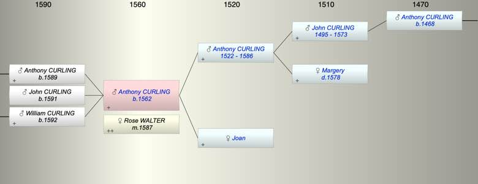

| [Index] |
| Anthony CURLING (1562 - ) |
|  |
| b. 1562 |
| m. 16 Oct 1587 Rose WALTER at St Peter, Thanet |
| Parents: |
| Anthony CURLING (1522 - 1586) |
| Joan |
| Siblings (5): |
| Joan CURLING (1555 - ) |
| Thomas CURLING (1557 - 1593) |
| John CURLING (1559 - 1611) |
| Margery CURLING (1561 - ) |
| Rabidge CURLING (1565 - ) |
| Children (3): |
| Anthony CURLING (1589 - ) |
| John CURLING (1591 - ) |
| William CURLING (1592 - ) |
| Grandchildren (9): |
| Daniel CURLING (1620 - 1648), Elizabeth CURLING (1623 - ), William CURLING (1619 - ), Susan CURLING (1623 - ), Mary CURLING (1625 - ), Priscilla CURLING (1627 - ), Joan CURLING (1630 - ), Katherine CURLING (1631 - ), Ann CURLING (1633 - ) |
| Events in Anthony CURLING (1562 - )'s life | |||||
| Date | Age | Event | Place | Notes | Src |
| 1562 | Anthony CURLING was born | Note 1 | |||
| 1586 | 24 | Death of father Anthony CURLING (aged 64) | St Laurence | Note 2 | |
| 16 Oct 1587 | 25 | Married Rose WALTER | St Peter, Thanet | Note 3 | |
| 1589 | 27 | Birth of son Anthony CURLING | Note 4 | ||
| 1591 | 29 | Birth of son John CURLING | Note 5 | ||
| 1592 | 30 | Birth of son William CURLING | Note 6 | ||
| Death of mother Joan | 1582 or 1588 at St L? | ||||
| Created on a Mac™ using iFamily for Mac™ on 8 Oct 2023 |